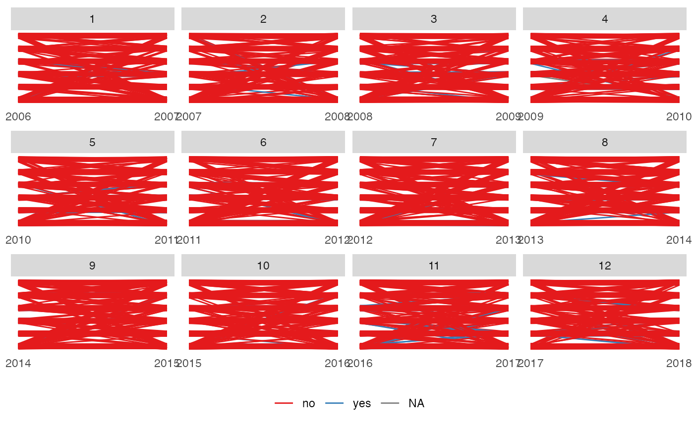

This function takes in the data which has been prepared by either anim_prep() or anim_prep_cat() and
return the ggplot object. The user can still modify the plot the same as normal using the ggplot2 function.
Details
This function takes prepared data and generates a ggplot object. The funnel web plot is the plot that shows the line facetted plot showing the pattern between time period. The line jitter can be controlled using additional arguments such as height and width to control the appearance. For the shading area, the alpha argument can be used.
Examples
animbook <- anim_prep(data = osiris, id = ID, values = sales, time = year, group = japan)
funnel_web_plot(animbook)
